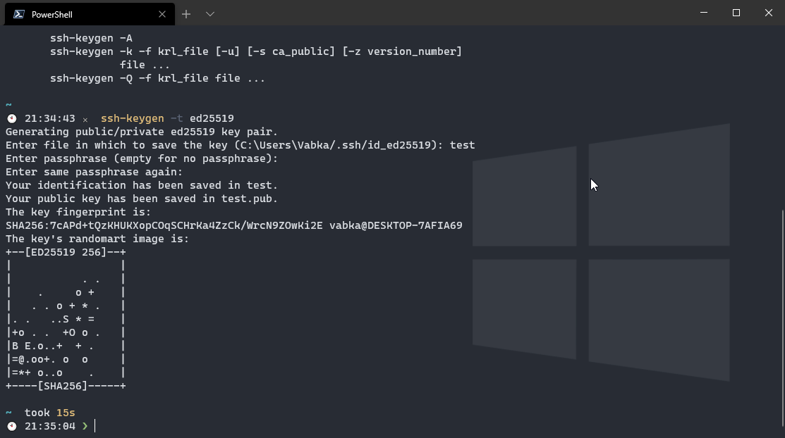
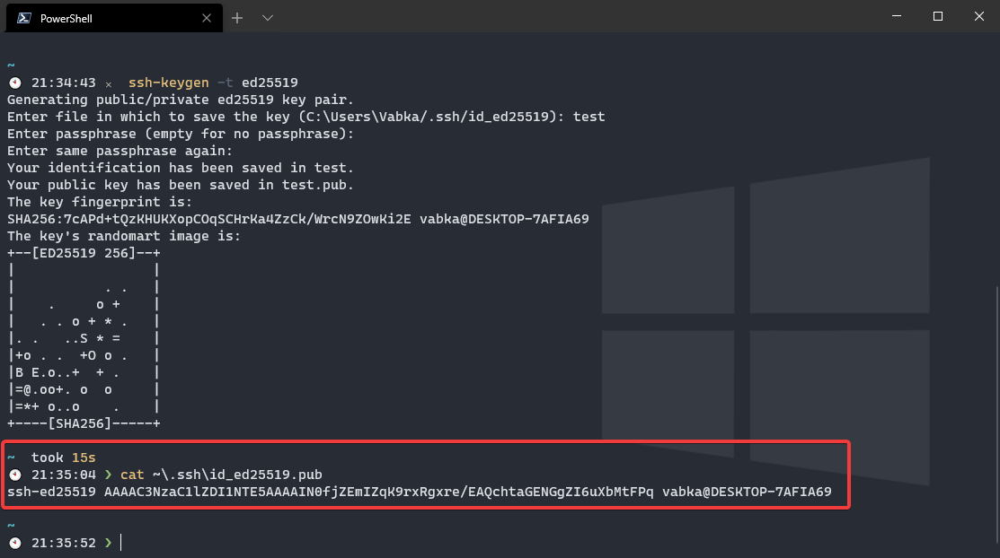
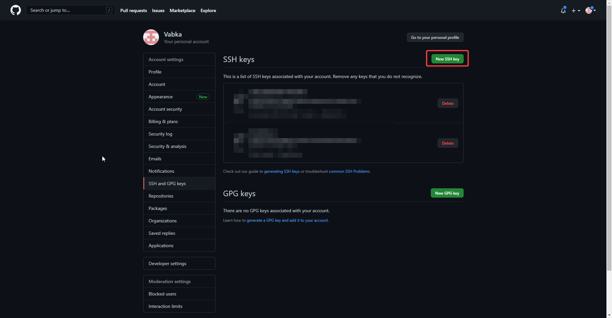
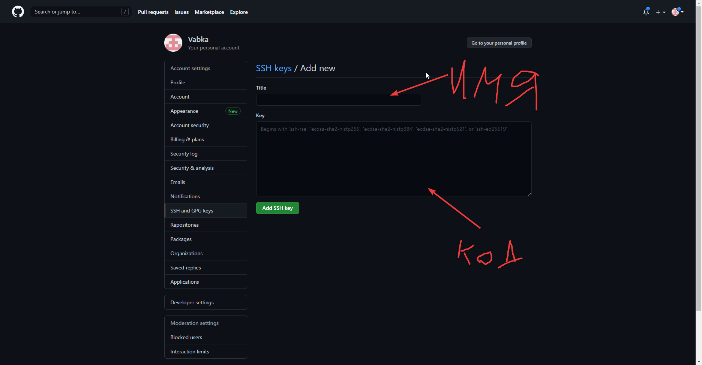

Василий Банников @vabka
Токсичный шарпист
1. Генерируешь ключ. Для этого в консоли надо ввести
ssh-keygen -t ed25519
На вопросы всегда отвечай ентером, ничего не пиши.

2. Потом пиши консоли
cat ~\.ssh\id_ed25519.pub
Вывод этой команды копируй и иди на гитхаб.

3. На гитхабе иди в настройки:
жмёшь на свою аватарку справа вверху и потом выбирай пункт settings в выпадающем меню
Потом выбираешь раздел SSH and GPG Keys
Создаёшь новый SSH Key

В название пиши что хочешь
В тело вставляй то, что скопировал ранее.

4. Профит
Ответ написан 31 мар. 2021
Комментировать
Пригласить эксперта